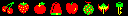

<h2>
  Speak commands!
</h2>
<h3>
  Say the name of the fruit you want, and where you want to move it (up, down, left, right)
</h3>
<ul>
  Fruits:
  <li>Cherry</li>
  <li>Strawberry</li>
  <li>Orange</li>
  <li>Bell</li>
  <li>Apple</li>
  <li>Grapes</li>
  <li>Dragon</li>
  <li>Key</li>
</ul>

<canvas style="border: solid;" width="320" height="320"></canvas>
<div></div>
<script>
  /*
   *  
   */
  function init() {
    // Turn the page elements into Javascript objects
    img = document.querySelector('img');
    canvas = document.querySelector('canvas');
    div = document.querySelector('div');

    // Get the canvas's drawing context, scale it four-fold, and turn off anti-aliasing.
    context = canvas.getContext('2d');
    context.scale(4, 4);
    context.imageSmoothingEnabled = false;

    // Create a "workspace" canvas that isn't displayed onscreen
    offscreen = document.createElement('canvas');
    octx = offscreen.getContext('2d');

    // Draw the sprites image onto the hidden canvas
    offscreen.width = img.width;
    offscreen.height = img.height;
    octx.drawImage(img, 0, 0);

    single = document.createElement('canvas');
    single.width = 16;
    single.height = 16;
    sctx = single.getContext('2d');

    // Build a hash of sprites by their fruit names
    sprites = {};
    names = ['cherry', 'strawberry', 'orange', 'bell', 'apple', 'grapes', 'dragon', 'key'];
    names.forEach(function(name, ndx) {
      imgData = octx.getImageData(ndx * 16, 0, 16, 16);
      sctx.putImageData(imgData, 0, 0);
      sprites[name] = new Image();
      sprites[name].src = single.toDataURL();
    });

    activeSprite = sprites.cherry;
    drawSprites();
    
    listener = new webkitSpeechRecognition();
    listener.onend = () => listener.start();
    listener.onresult = e => parseWords(e.results[0][0].transcript); // Arcane nonsense
    listener.start();
  }

  function parseWords(sentence) {
    div.textContent = sentence;
    words = sentence.toLowerCase().split(' ');
    words.forEach(function(word) {
      if (word in sprites) makeActive(sprites[word]);
      else if (word == 'up') activeSprite.drawY = 0;
      else if (word == 'down') activeSprite.drawY = 64;
      else if (word == 'left') activeSprite.drawX = 0;
      else if (word == 'right') activeSprite.drawX = 64;
    });
    drawSprites();    
  }

  function makeActive(sprite) {
    if (!('drawX' in sprite)) {
      sprite.drawX = 32;
      sprite.drawY = 32;
    }
    activeSprite = sprite;
  }

  function drawSprites() {
    context.clearRect(0, 0, 80, 80);
    for (name in sprites) drawIfActive(sprites[name]);
    drawIfActive(activeSprite);
  }

  function drawIfActive(sprite) {
    if ('drawX' in sprite) context.drawImage(sprite, sprite.drawX, sprite.drawY);
  }
</script>